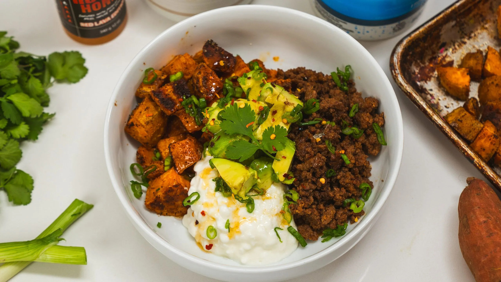

Home Page
Delicious Ground Beef Protein Bowl Recipe

This ground beef protein bowl packs all the protein you need for
a great macro minded meal.
This dish has been circulating all around social media for its easy to whip up,
packed with flavor, and perfect for meal prepping nature.
Ingredients
For the Sweet Potatoes
- 2 Sweet Potatoes, Cubed
- 1 1/2 tbsp Olive Oil
- 1 tsp Salt
- 1/2 tsp Pepper
- 1 tsp Garlic Powder
- 1/2 tsp Chili Powder
- 1/2 tsp Cumin
For the Ground Beed
- 1 lb Ground Beef
- 1 1/2 Salt
- 2 tsp Garlic Powder
- 2 tsp Smoked Paprika
- 1 tsp Cumin
- 1 tsp Chili Powder
- 1 tsp Pepper
For the Bowl
- Cottage Cheese
- 2 Avocados
- 1/4 Cup Hot Honey
- Chili Flakes
- Green Onion for Garnish
Steps for Recipe
- Preheat your oven to 400°F (200°C).
- Toss the cubed sweet potatoes with olive oil, salt, pepper, garlic powder, and
cumin. Spread them on a baking sheet and roast for 20 minutes.
- While the sweet potatoes are roasting, cook the ground beef in a skillet over medium
heat. Add salt, garlic powder, smoked paprika, cumin, chili powder, and pepper.
Stir and cook until browned and fully cooked.
- Assemble the bowl: Add roasted sweet potatoes, seasoned beef, a scoop of cottage
cheese, sliced avocado, and a drizzle of hot honey. Garnish with green onions.
- Dig in and enjoy!.